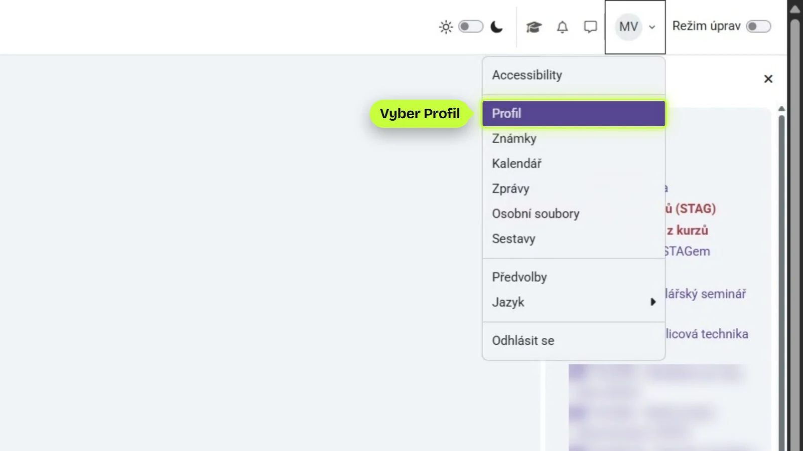
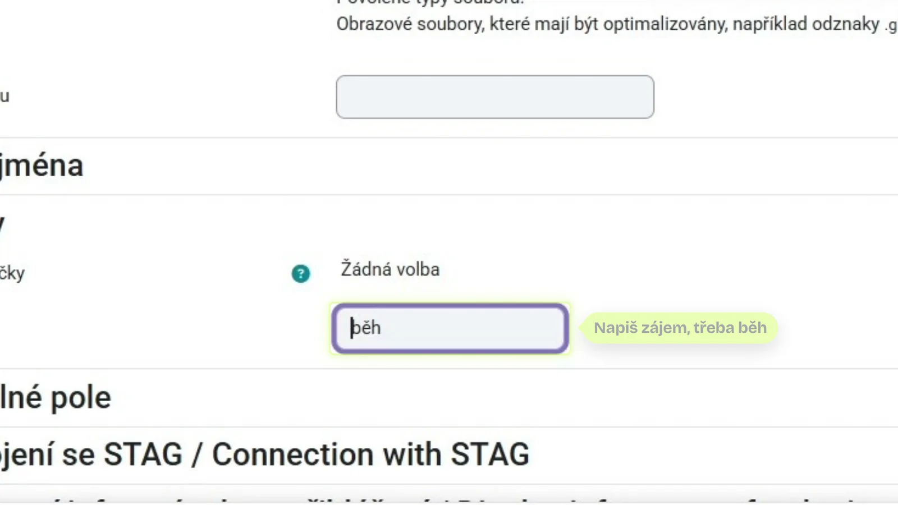
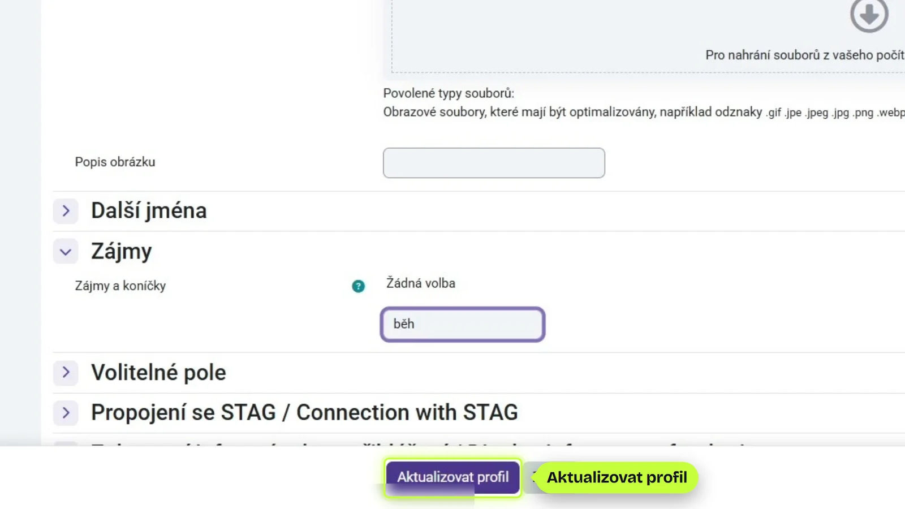
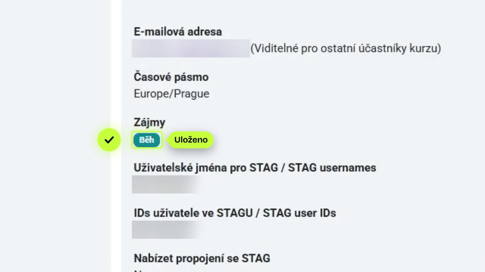

Jak přidat zájem na svůj profil
Jeden návod ve dvou podobách: krátké video s voiceoverem a textový postup se snímky pro ty, kdo radši čtou. Na konci stránky je rozepsané, jak video vzniklo.
- Délka
- 0:38
- Kroky
- 5
- Jazyk
- čeština · English
- Hlas
- ElevenLabs
- Podoba
- video a text
Zájem na profil za minutu
Stejné kroky jako ve videu. Snímky vyrenderoval stejný skript jako video, takže spolu vždy sedí.
- Potřebuješ
- přihlášení do e-learningu
- Čas
- asi 1 minutu
- Zařízení
- počítač s prohlížečem

Obr. 1. Otevři svůj profil 1Otevři svůj profil
Vpravo nahoře klikni na kroužek se svými iniciálami. Otevře se nabídka. V ní vyber Profil.

Obr. 2. Klikni na Upravit profil 2Klikni na Upravit profil
Na stránce profilu najdeš v bloku Detaily uživatele odkaz Upravit profil.

Obr. 3. Rozbal sekci Zájmy 3Rozbal sekci Zájmy
Formulář je dlouhý. Sjeď dolů k sekci Zájmy a kliknutím na šipku ji rozbal.

Obr. 4. Napiš svůj zájem 4Napiš svůj zájem
Do pole Vložte štítky… napiš, co tě baví, třeba běh, a potvrď klávesou Enter. Každý zájem je samostatný štítek, takže jich můžeš přidat víc.

Obr. 5. Ulož změny 5Ulož změny
Úplně dole klikni na Aktualizovat profil. Bez uložení se zájem neprojeví.

Obr. 6. Hotovo ✓Hotovo
Zobrazí se hláška Změny uloženy a zájem uvidíš na profilu v bloku Detaily uživatele.
Z 56 sekund surové nahrávky na hotový návod
Obrazovku jsem natočil jedním průchodem bez střihu. Zbytek dělá skript, který jsem si k tomu postavil s Claude Code. O tempu, textu a zvýraznění rozhoduji já.
| 56 → 38 s | surová nahrávka a hotové video |
| 1 154 | snímků vykreslených kompozicí |
| 7 | vět voiceoveru s časováním slov |
| 6 | generovaných zvukových efektů |
| ~4 min | render celého videa na notebooku |
Natočení
Záznam obrazovky ve Full HD, jeden průchod. Čekání a pomalá místa zrychlí až střih.
OBS StudioAnonymizace
E-mail, studijní čísla, data přihlášení a kurzy jsou rozmazané. Oblasti mají souřadnice i čas, takže sedí i při scrollování.
Python · PillowScénář a hlas
Krátké věty, jedna na krok. Hlas vrací i časování každého slova, a z něj vznikají titulky.
ElevenLabs APIKompozice
Zoomy, zvýraznění, kliknutí, popisky a odznak kroku. HTML šablona vykreslená snímek po snímku.
HTML/CSS · PlaywrightZvuk
Efekty na kliknutí a přechody. Hudba se pod hlasem ztiší, hlasitost je srovnaná na −16 LUFS.
ElevenLabs · ffmpegExport a text
Video v H.264. Stejný skript vyrenderuje i čisté snímky pro textový návod.
ffmpeg
Před a po
Vlevo surový snímek (už s rozmazanými údaji), vpravo stejný okamžik ve videu. Posuň jezdcem.

 NahrávkaVideo
NahrávkaVideo
Kontaktní arch
Šestnáct snímků z hotového videa. Kamera vede oko k místu kliknutí a na konci se vrátí na celou obrazovku.
Časová osa a scénář
Každý krok má svůj úsek. Když je věta delší než záběr, skript podrží první snímek, aby hlas nepředběhl obraz.
Jeden krok v kódu
Krok 4 je pár řádků dat: které části nahrávky a jak rychle, kam se přiblížit, co zvýraznit a co říct. Nový návod je nový soubor, ne nový střih od nuly.
{
"step": "Napiš svůj zájem",
# úseky nahrávky: od, do, zrychlení
"pieces": [(31.8, 33.1, 1.5), (33.1, 40.0, 1.5), (40.0, 42.4, 2.0)],
"vo": "Do pole napiš, co tě baví. Třeba běh.",
# kamera: čas → střed a přiblížení
"cam": [(0, (420, 800, 1.8)), ("s32.6", (665, 800, 2.6)), ("s41.6", (654, 900, 1.8))],
"rings": [((570, 843, 192, 39), "s32.0", "s40.2")],
"callouts": [("Napiš zájem, třeba běh", (762, 862), "right", "s32.2", "s40.2")],
"sfx": [("pop", "s32.2"), ("typing", "s33.3")],
}Co dělá AI
- čte věty scénáře a vrací časování slov
- generuje zvukové efekty a hudbu
- pomohla mi napsat skript, který vše skládá
Co dělám já
- scénář: co říct, v jakém pořadí a jak stručně
- tempo: co zrychlit, kde zastavit, kam přiblížit
- kontrolu: rozmazání údajů, srozumitelnost, zvuk
Návody se mění. Výroba to má unést.
Aktualizace bez přetáčení všeho
Když se změní prostředí aplikace, přetočím jen dotčený krok. Zbytek videa se vyrenderuje znovu sám.
Jazykové verze
Anglická verze znamená přeložit věty a vybrat hlas. Osa, zoomy i zvýraznění zůstávají. Podívej se na ni.
Jednotný styl
Barvy, písmo, odznaky kroků a titulky jsou v jedné šabloně. Každé další video vypadá jako ze stejné série.
Video a text vždy sedí
Snímky pro textový návod vznikají ze stejného zdroje jako video. Oprava kroku opraví obojí.